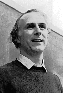

|
David Kolb: "Socrates in the Labyrinth" |
|
|
 Presentation of David Kolb at Eastgate.com Charles Ess on David Kolb's hypertext Socrates in the Labyrinth,: "It is hard to overstate the significance of Kolb's hypertext.... "As an authentic piece of creative philosophical thought and as a remarkably successful use of hypertext technology, this piece should be required reading for hypertext enthusiasts and philosophers alike." - From Charles Ess's review.
Doug Brent: Rhetorics of the Web (an attempt at practicing the kind of philosophizing Kolb outlines in his article) Interview with David Kolb at La Repubblica (in Italian) Nick Carbone on David Kolb and Jay David Bolter and mapping in hypertext |
Can we do philosophy using hypertext? What kind of work might a philosophical
hypertext do? Could it do argumentative work, or would any linear argument
be a subordinate part of some different hyperwork? But what is thinking
if not linear? In the course of this discussion I shall bring such questions
into the neighborhood of several philosophers for whom thinking is more
than a linear process. Authors of familiar linear text work hard to create a convincing sequence
of narrative or exposition or argument. A hypertext by contrast comes
as a web of text, like a landscape that cannot be seen all at once but
can be explored along many different routes. The author cannot control
which links the reader will pursue, and in some systems the reader can
create new units and links, so that the web changes and grows. The roles
of author and reader begin to shift as the being of the text changes. Such multiply connected texts will be used in many ways. We do not know
what those ways will be. There is no reason to think there is one essential
or best way to use hypertext, any more than there is one essential or
best way to use paper. Writing on paper can produce laundry lists, thank-you
notes, scholarly treatises, disjointed jottings on the back of train schedules,
love letters, instruction manuals for VCRs, romance novels, and countless
other items whose points and criteria have little in common. We can imagine
how hypertext might help or alter activities that we already perform with
ordinary text, but it is harder to imagine what new forms of life or new
uses might develop (although we already know one, a new form of cooperative
writing). Officially, according to Plato, philosophy's work involves the critical
self-observant search for the truth. But is critical dialogue and reading
a form of life or a part of other form(s) of life? In Plato, the activity
of philosophy leads us to discover who and where we are and how we should
live. In the process, Socrates tries to convince us that the search for
the truth is not merely a means but is itself a component of any good
human life that goes along with the grain of the universe. This larger
work of self (and communal) discovery (and creation) is an activity to
which we might imagine philosophical hypertext making a contribution. There are some quite traditional functions that hypertext could perform in philosophy:
Such implementations of hypertext are worthwhile and would enrich the
field of philosophy in many ways. Nonetheless, in these forms hypertext
still functions as a presentation medium that remains subservient to the
traditional goals and organization of philosophy. For the most part, links
would embody the standard moves of argumentation - making claims, giving
backing, contesting claims, raising questions, stating alternatives, and
so on. The text would be multilinear but would remain organized around
the familiar philosophical forms of linear argument. There are more radical uses of hypertext. The most experimental so far have been in fiction. There the narrative line is under attack. Could there be a hypertext philosophy that departed from philosophy's argumentative moves and traditional linear form?
Could this also be true of philosophy? Is a nonlinear philosophical work possible, or is philosophy so committed to the line that hypertext must remain an expository device or an informational tool for philosophical texts, unable to offer a brave world of new philosophical textual strategies?
Would such a writing be desirable in philosophy? On the one hand, philosophy, though it was born in the evenly empowered
fragments of the pre-Socratics, became self-conscious in the forward movement
of the Platonic dialogue. It declared its need of system and syllogism
with Aristotle and grew through the combative summae of the medievals
into the argumentative chains of Descartes and Spinoza, then it built
the great nineteenth-century systems and today shows itself most precisely
in the crafted linear form of the analytic article. It would seem that
there is no way to deny the line and still do philosophy. Hypertext appears
at best an informational convenience, but its shapeless depths must not
be allowed to weaken argumentative linearity, or philosophy will be reduced
to rhetoric. On the other hand, the Platonic dialogues are elusively inconclusive,
Aristotle's system is not intended to be deductively tight, there are
the forests of medieval commentaries on commentaries, the nineteenth-century
systems are disturbingly nonlinear, and there are counter-traditions attacking
or perverting the line from at least Pascal and through Kierkegaard, Nietzsche,
Wittgenstein, and today's deconstructionists. While current philosophy
appears mostly as the essay or the anthology, there have also been the
meditation, the aphorism, the pensée, the diary, the dialogue,
and other forms. So perhaps hypertext will make a new kind of philosophical
writing possible. It is an odd question to ask: "What can hypertext do to and for
philosophy?" It is like asking what print can do. But there are some
generalities that were observed, as early as Plato, about the effect of
writing on communication, memory, and thought. Writing is the first step
in thought's losing control and gaining control of itself: losing control
because, as Plato complains, writing removes the content from the living
process of dialogue that should be fully present and responsible to itself;
gaining control because the units of exchange can be frozen and inspected
and structured more intricately, just as Plato wrote and rewrote his dialogues;
yet again losing control, because even with that rewriting the words and
structures take on lives of their own. They do so in oral discussion too,
but in hypertext words and structures can find their way into more contexts
and changes. Philosophy is in many ways a child of writing. There are few if any oral
texts that might be technical philosophy. (The Indian Vedanta sutras come
to mind, with their lapidary conciseness fit for memorization, but they
soon become embedded within a cloud of written commentary.) There are
many oral texts that might do some of the things philosophy does, but
the specific philosophical gesture seems to want writing, to preserve
lines for future examination. Philosophy has always exhibited some tension between writing and live
performance. Socrates wrote nothing. Plato writes condemning writing.
Medieval teaching consisted of oral commentaries and debates on written
texts. Jewish and Tibetan philosophical practices weave an intricate interplay
of written and oral performance. Even professionalized philosophy today
usually judges contemporary thinkers on oral quickness as well as on written
depth. I have assembled here some considerations that urge against philosophy's
using hypertext as more than an expository device. They are based on a
classical conception of philosophy and make a strong case that philosophy
cannot lose its line, which I almost believe is so. This argument is then
subjected to qualifications derived from several thinkers who question
or supplement the line. The principal argument against web writing in philosophy is straightforward:
philosophy essentially involves argument, and argument essentially involves
a beginning, middle, and end, so that a truly philosophical text needs
a line. This position claims more than that works of philosophy should
include arguments within their texture; it says that any single work should
be structured as a large argument. It is through the argumentative line
of its overall structure that any piece of philosophical writing does
its work. An argument links premises and conclusion. To use the hackneyed example,
from "All men are mortal" and 'Socrates is a man" we must
conclude that "Socrates is mortal." This is not reversible,
since from "Socrates is mortal" and 'Socrates is a man"
we cannot conclude that "All men are mortal." There is a structure
to the argument that must be respected. The three sentences could be linked
in a hypertext web, but that is not enough to give the unidirectional
dependence demanded by argumentative structure. It is true that for expository convenience the parts of the argument
may come in any order in the text, but the argument will be present only
when the underlying linear abstract structure is indicated in some manner.
It is also true that some arguments have multiple beginnings and branches
that jointly support conclusions or diverge from premises, but these still
arrange into a unidirectional abstract structure with beginnings, middles,
and ends. A philosophical argument (or a mathematical proof) cannot be
presented as a cloud of disjointed statements. The conclusion is that
philosophy's line cannot be dissolved in the way some have dreamed of
dissolving the narrative line. On this view bypertext would have to respect
the line by making arguments the units of presentation and by maintaining
some overall linear argumentative structure. This amounts to a claim that philosophy loses its identity if it is not
structured as an argument. This essentialist claim can be further developed:
in a hypertext web without a line there would be no overall structure
that would enable one to hold the text still and locate the claims being
made, in order to have a clear object to criticize. In introductory philosophy
courses students are often told that the first thing they should do is
"find the conclusion." Then they are told to "outline the
argument." Since an outline contains constant indications of its
structure, one knows one's location at all times. One needs to know where
one is in the larger structure, so that one can see what is being claimed
and be able to criticize it. The line brings focus, and focused criticism
is essential to philosophy, one of whose parents was Socrates's insistence
on responsible, limited assent to carefully defined claims. This emphasis upon linear argument contrasts with hypertext webs that
may have no fixed beginnings or endings, are hard to explore, may have
no conclusions, and may deliberately avoid being caught in any totalizing
overview. So, to do hypertext philosophy without the line that leads to
a conclusion would seem to denature philosophy into its traditional opposites,
rhetoric or idle talk. Rhetoric: the hypertext would perhaps be an accumulation of words and
images and considerations that persuade the reader to adopt an attitude
or a course of action, but this persuasive effect would not be controlled
by a line that provides a route for criticism and rational evaluation
in terms of the goal of truth rather than the goal of persuasion. (It
is true that there are modes of philosophy that attack the distinction
between philosophy and rhetoric, but these usually do so as the conclusion
of an argument that does conventional philosophical work.) Idle talk: the hypertext would just expand as conversation might, enjoying
the act but not standing watch over itself by asking about conclusions
and grounds. Socrates tried to convert his listeners and bring them into
the position of constant responsibility for their own and others' discourse.
Conversation can be its own pleasure and work within a complex network
of changing goals and its own logic of response, but Socrates wants philosophy
to be single-minded, subordinating discourse to the single search for
grounds and truth. From Plato on, philosophy has insisted on the need
for decisions in its root meaning of cutting off what it takes to be wandering
excess and keeping to the narrow path. Socrates tends to picture our usual
conversations as either goalless pleasurable exchange or manipulative
rhetoric; he seeks to turn all conversations into occasions for teaching
and responsibility. (We might suspect that a philosophical hypertext would
have to find ways to let discourse overflow this strict goal-orientation
while remaining self-critical and responsive.) The previous consideration can be amplified in a more practical way.
There is a danger that creating a philosophy hypertext web would be the
functional equivalent of writing without self-discipline, publishing one's
drafts and jottings, or self-indulgently exfoliating ideas without taking
a position. This extravagance would infect the philosophical work with
some well-known diseases: wandering commentary, endless qualifications,
fruitless self-reflection, unnecessary contentiousness, the piling up
of meta-level upon meta-level. This result could both stem from and itself
promote intellectual laziness, or it could cater to a noncritical audience
that wants to be titillated by the passage of ideas but not challenged
in its own beliefs of values. The obvious response to this third consideration is that bad writing
is bad writing, whether it is in hypertext or linear text. But the consideration
suggests that working up one's drafts and jottings into good philosophical
writing is precisely a matter of critical mastery and judgment that demand
and produce a line. What would thinking mean if it were not providing
form and focus, definite claims, critical judgment, beginnings, middles,
and ends, and so preventing an indefinite accumulation of words and images?
This question remains open. A classical answer to these classical considerations might be to grant
that philosophy needs the argumentative line but to deny that a philosophical
hypertext web need be limited to one single line. Hypertext philosophy
should be considered not as a single author controlling a line into a
text but as a net of linear texts confronting one another in a kind of
endless expansion, as they have in fact done in the history of philosophy.
But this response provides only a weak defense of philosophical hypertext,
for we already have that open web of interacting texts - it is the library,
and it contains its own links and internal maps in its commentaries, concordances,
bibliographies, and footnotes. The links in a hypertext library would
make possible many new types of commentaries and collections, but these
new features might still allow individual units to remain structured in
linear ways. Can hypertext webs provide new possibilities for writing something that
might be less linear or nonlinear and yet still do philosophical work?
If the above considerations are accepted, it would appear that philosophy
is constituted by the presence of the line. But even if the line is required,
it may not necessarily be the single controlling element in philosophical
writing. Not all paths follow the line. Philosophy's line finds itself constantly surrounded by supplements which
it both desires and rejects: marginalia (as in medieval manuscripts),
parallel columns of text (as in Kant's antinomies), parenthetical (and
footnote) remarks that provide self-critical comments, ampliative material,
methodological reflections, objections and replies, ironic juxtapositions,
historical precedents and deviations, references to other texts, quotations,
and so on. Footnotes are said to be a kind of primitive hypertext, but there is one important difference. At least in books where footnotes actually appear at the foot of the page, the note and the text it comments on are present together. The note and text form one visual gestalt. (In hypertext systems this gestalt can happen only if more than one window can be presented on screen simultaneously, but even then the windowing apparatus separates them.) Another example of the same problem is James Joyce's work. Finnegans Wake in particular is sometimes cited as a proto-hypertext. But this is misleading; Joyce's work depends on the simultaneity and the emerging together of the multilingual play of meanings and structures. Separated into discrete links, the combinations would lose much of their power. Plato's dialogues are notorious for their sinuous movement and their
pauses to talk about themselves, and Aristotle's texts are full of remarks
that beg for links to other discussions. Writing philosophy, one feels
a constant tension between the desire to reach out into the surrounding
discourse that opens a place for the line, and the reverse desire for
compactness and linearity. Philosophy wants to cover everything with its
graffiti, to find itself always already arrived, but also to utter only
the one first magic necessary word. We can insist on the linear nature of argument, but in what is argument
embedded? There is a knowing how to go on which is knowing how to read
how to continue the series, how to use the tool. This knowing is a matter
of finding ourselves accepting descriptions, of knowing what sort of place
"we" are in. This place is not established by argument; it is
presupposed in being able to follow an argument. The classical philosophical dream is that philosophy as a whole be one
huge rigorous discourse, which usually means one huge chain of arguments.
But where is the chain anchored (and how do we know what it is to follow
it)? Aristotle said (in the Posterior Analytics) that either a
chain of argument has to be anchored in premises that are evident in themselves
and so do not need argument (the choice of Aristotle and Descartes and
many today) or the chain must be circular (in complex ways, the choice
of Hegel and of today's holists). Either way, the big argument should
dominate the overall structure of any text in which it appears. In fact, it is preparations for the big argument that often dominate
the texts. Arguments, big or small, are surrounded by a more informal
discourse that leads us to and from the argument. This discourse puts
us in a position to follow the line. There are discourses that get us
into position to accept the premises, to understand the situation, to
follow the argument, to tie the line into life. For many philosophers the austerity of the mathematical proof stands
as the ideal, yet, as Kant pointed out, philosophy and mathematics are
crucially different in that mathematics starts with definitions while
philosophy ends with them.3 Philosophy discusses alternative first principles
and disputes definitions and modes of argument. It tries to find a rigorous
way of disclosing the conditions that make rigorous lines possible. Even the purest philosophical line in a technical article or book has
vestigial or presupposed discourses of this type surrounding it. They
furnish the understanding of what the piece is and what to do with it.
The real structure of the philosophical work is not simply argumentative.
To read philosophy as always embedded in such informal discourse demands
that one pay attention to parts of the text students are encouraged to
rush over in their eagerness to find the conclusion and outline the argument.
A more circumspect mode of reading does not make such essentialist presuppositions. On the other hand we have to be careful not to make the parallel mistake
of saying that the fluid discourse is itself totally without argumentative
structure. The point should be that argument and fluidity are always linked.
Just as we cannot say that argument absorbs the fluid discourse, so we
cannot say that the surrounding discourse is primary in the sense that
it has some special nonargumentative structure of its own. So, the argumentative line is surrounded by a fluid discourse in which
there are no fixed primacies and no firm meta-levels, because in that
discourse such things get established, though in an always discussable
manner. Which is not to say that the fluid discourse never accomplishes
anything; bearings are given. Hypertext seems to be a medium in which
this fluid discourse could flourish. I see two matching temptations here: the first, to dismiss the embedding
discourse as preparation, a ladder to be thrown away once we have climbed
it; the second, to make that discourse into a new kind of line. Hypertext
is not likely to give in to the first temptation, but we can learn something
about the possibilities of hypertext philosophy from someone who gave
in to the second, Georg Wilhelm Friedrich Hegel. It may seem surprising
to invoke the great systematizer here, but there is a lesson we can learn
from him, and a caution. The lesson is the possibility of two-dimensional philosophical discourse,
where the links do multiple duty. Hegel's books appear to be resolutely
linear treatments of a sequence of many detailed categories and historical
periods. But that movement has a peculiar structure: the transition from
one category to another turns out to be an aspect of a larger transition,
which turns out to be a moment in a yet larger movement, and so on up
to the major movement of the system, which takes the form of a circle,
not of a line with a beginning and end. For example, in Hegel's political philosophy a particular detailed transition,
say, between two parts of property law or two aspects of the division
of labor, also expresses part of a larger movement by which the bourgeois
social structure defines itself, which in turn acts as a phase in still
larger movements concerning the embodying of freedom, the relation of
history and social identity, and the coming of self-understanding of our
place in the world process. These larger movements do not just sum up
a series of micro-movements; there are complex mutual influences among
the levels. There is no single micro-transition to which one can point
and say that there and nowhere else the larger movement is accomplished. In pointing out relations between aspects of property law or kinds of
religious symbols, Hegel means to show how they derive their identity
from their relation to each other but also how that relation in turn depends
for its identity and stability on its insertion in a larger exchange,
and so on. The links found in Hegel's texts work on many levels at once,
performing different movements at different paces. Furthermore, at none of these levels do the links function as moves in
standard arguments. Argumentation does occur, but it is subordinated to
Hegel's attempt to capture and arrange into an interdependent whole the
set of contexts and categories that are the preconditions of argument.
Hegel's ambition is to show how all the situations (and directions and
self-understandings and categories of thought) that set the place of argument
can be grasped as moving towards a final communal self-understanding. However one questions such grandiose ambition, Hegel's approach offers
two lessons for our hypertext theme. The first is that philosophy can
indeed be made out of a discussion of the place and preconditions of argument's
line. Such philosophy need not itself proceed as a big linear argument,
though it may use argument within its own movement. Secondly, links and
transitions may have other forms than the standard argumentative moves,
and they may be elements in many motions at the same time. Here, however, is the caution. Hegel tries to show complex relations
of mutual constitution and interdependence among the categories that structure
thought., Those relations do not fit easily into linear arguments, but
neither do they fit the relations usually said to connect units of a hypertext. Hypertext is often diagrammed as boxes connected by arrows. In The Science of Logic, Hegel complained about the geometric or numerical diagrams employed in his day to model the relations among thoughts. Such diagrams, he said, showed too few types of relations (inclusion, exclusion, and one- or two-way relation). Moreover, he objected, they presupposed that the items being related were distinct and already definite at either end of the diagram's lines. Such diagrams cannot easily show the mutual dependencies and co-constitution among our categories of thought; they tend to reduce these relations to inclusion-exclusion or whole-and-part. The caution, then, is that hypertext may make its lexias too independent and its relations too geometric to allow the complex interdependencies that nonlinear philosophy might want to explorers Peter Whalley discusses this issue in connection with the standard comparison of linear text and hypertext:
Can hypertext display the process of first expounding an idea as independent
or immediately given then showing it to be involved in complex relations
that qualify its independence and constitute a larger unity? This overcomes
the seeming independence of the first stage, then returns to that stage,
now in the new context. Though not taking the form of linear argument,
this process would demand a set of links that would do multiple duty,
and it should be traversed from a beginning and return again to that beginning.
To intercept only a part of this movement would be to take as independent
something that should not stand on its own. To leave the first links behind
would be to miss an aspect of how the larger unit exists. To lose the
cyclic or spiral movement in a cloud of links would be to diffuse the
investigation into comments that presuppose too much independence in the
individual moments of the discourse. Efforts to avoid these problems might demand that individual lexias be
very large, which would reintroduce linear texts, or that new forms and
uses of links be found. But can the box-and-arrow structure of lexias
and links carry a progress of thought that, while it is neither argumentative
nor linear, does demand mutual movement of this kind? It is easy to add qualifications to what you find in a hypertext, but
the model that dominates hypertext's mechanism is that of independent
bits of information linked to one another. Yet, the fluid discourse that
shows that philosophy is not all linear argument also demands more kinds
of structure than arbitrarily multiplied links. Connection and linkage
are not the same as dialectical relations or mutual constitution. Hypertext's
granularity makes it difficult to show two units co-constituting each
other. We need a new nonargumentative form for a set of links, above the
level of the individual lexia and short of the entire hypertext network.
The possibility of new philosophical writing depends in large measure
on the creation of such intermediate forms of movement and linkage that
make more than argumentative moves. Of course, in an interactive hypertext such intermediate forms would
remain porous and interruptible. They would be at most one set of paths.
(If a form is unable to be framed, is it still a form?) Putting the issue
this way reminds us that problems about the multiple and porous boundaries
of forms have long been debated in the philosophy of art and literature,
in which theorists have had to deal with reuse dominating or covering
original use (as in reference to and quotation from obscure originals)
or in which original unities are dispersed into new artistic forms and
genres. Does this then mean that hypertext might be best thought about not by
means of images of great systems but with Derrida's deconstruction, which
is an errant descendant of Hegel's dialectic that glories in incomplete
wholes and interrupted necessities? Deconstruction emphasizes the lack
of totality and closure in any form. The line tends to become encrusted
with its preconditions and with meta-comments and amplifications. Suppose
it dissolved into them? Imagine a text that became nothing but footnotes
and marginalia referring to one another. (It sometimes seems that contemporary
deconstructive texts aspire to this status.) This text would say many
things at once without granting primacy to any of them. Could this text
still be philosophy? In any case, deconstructive alarms should have been going off during
the earlier discussion. I deliberately used the word supplement
- and essence, unity, necessary boundaries, fixed
identity, full presence, excess: these are all fighting
words nowadays. I am not here interested in what is sometimes called deconstruction
but is really an attempt to eliminate any notion of essence and identity.
Rather, what interests me is the maneuver of allowing essences, identities,
boundaries (and argumentative lines and definite claims) while showing
how the claimed essences or unities break their own closure. They function,
but they function as effects in a space they cannot dominate. Hypertext looks like a natural for the attempt to show that any presumed
overall structure, narrative or philosophical, argumentative or dialectical,
works within a larger field that it does not control. Hypertext's endless
possibilities for recombination and reuse should facilitate the creation
of texts in which the narrative or philosophical line is self-consciously
reinscribed within, yet does not dominate, the space of the text. In his book Hypertext, George P. Landow has shown many parallels
between contemporary literary theory and hypertext technology. He is particularly
concerned with the overall effect of hypertext as a medium; he argues
that it will question the unity of the text, the roles of reader and author,
and the power relations of education and access to information. He concedes
that "the enumerating linear rhetoric of 'first, second, third' so
well suited to print will continue to appear within individual blocks
of text," but he argues that the whole will not be structured in
a linear fashion. Landow's examples from classroom experience show how
a more active hypertext creates pressure on textual unity and traditional
roles. It might seem that Derrida's experiments with parallel columns of text,
marginalia, and footnotes that bite the text that feeds them could be
read as print substitutes for hypertext, but most of Derrida's deconstructive
performances happen in linear text that is made to exceed its own strictures
without typographical gymnastics. There are indeed texts with distorted
linearity, for instance the book Glas or the essay "Tympan,"
but something is going on in these texts that could not be duplicated
in hypertext links. Derrida's typographical maneuvers depend on simultaneous
visual access to the related elements. It is important in those texts
that the references across the parallel columns be contingent, dependent
on how the eye jumps and reads, rather than frozen in the discrete predetermined
links of a hypertext. It is the contingency of juxtaposition, rather than
the definite link, that helps demonstrate the fecundity of signs and lack
of closure Derrida is concerned to show. Indeed, in some ways hypertext does not question the unity of the text
deeply enough. It might seem to a deconstructive eye that hypertext remains
too much a system of linked presences rather than a play of presence and
absence. Even if it is growing and cannot be summarized in a glance, it
exists as a totality of nodes and links, a vast structure that could in
principle be made present. This statement is not quite accurate, however.
Although there is a totality to be found in the computer records, the
"form" of the hypertext is not in the enumeration of nodes and
links but in their more complex relations. Pointing to the set of pages
in a book or the letters on a page does not tell you whether the book
is a novel or a repair manual, or whether the letters are an introduction,
a narration, or enact some other intermediate part of a larger book-form.
Listing the totality of nodes and links in a hypertext does not tell you
what they are doing. The fact that links are possible challenges the closure of any piece
of text. Still, the very endlessness of possible links means that none
of them need question the integrity of the individual lexia in the way
that deconstructive operations conducted on site might do. Links lack
the contingent fecundity of immediate juxtaposition and the self-referentiality
of clever textual turns. The links do not necessarily bring off the fragile
slippage of a signification that denies its own attempted closure. Hypertext
links can change a lexia's relations and its role within a whole or context
but they do not make it reflect on or exceed its own unity. One could
presumably compose the individual lexias so that they did this self-questioning
or self-transgressing, but then what would the hypertext mechanism add
to the deconstructive endeavor? It remains to be seen whether hypertext
can put enough deconstructive pressure on the individual lexia. There
is the danger that the hypertext could become a mass of comments and links
in which no single link could gather enough force or distinctiveness to
make deconstructive maneuvers. By their very multitude the links would
allow individual lexias too much atomistic sufficiency. This returns us
to the issue of intermediate form. We need to understand better the ways in which links and paths can enact
forms and figures (intermediate between the lexia and the whole document)
that bring pressure to bear on the "internal" being of the individual
lexias. We need to understand how to write the individual lexias so that
they are more clearly permeable to this influence. We might also ask whether a hypertext web might expand too far to maintain
the pressure on textual unity and authorial roles. A map that is too detailed
becomes another nature to be explored. An expanding hypertext web would
contain so many kinds of paths that it could not be classifiable as belonging
to a single genre, such as philosophy or fiction. Those regions of the
web that were genre-similar would be inscribed into a textual space that
was not controlled by the rules of their genre. It is an exciting possibility.
But as the web became larger it might, like a library, appear only as
a background for unified works in various genres. We are concerned here
not with such a global library but with the philosophical reading room
(even if its walls are porous). An analogous problem emerges there as
well. A multiply created philosophical hypertext web (or region of a web)
could get large enough that it would resemble a collection of philosophical
journal articles responding to one another, or the threads of discussion
carried on Internet electronic-mail lists. But then the hypertext might
become only a presentation medium for a collection of linear texts. This
argument again points to the importance of new intermediate forms other
than argument and counter-argument. I keep stressing the need for new intermediate forms because we must
avoid the temptation of seeing hypertext either as a collection of atomistic
information units or as an infinite play of signifiers. It is true that
hypertext's writing space cannot be restricted by any intermediate forms
that might be enacted within it. This lack of restrictability can lead
to viewing the hypertext web as itself that general economy that lies
behind and within any limited text or economy. This temptation is fueled
by dreams of a universal hypertext network. But no matter how extensive,
a hypertext web remains an artifact with defined components and links.
The unlimited economy or general text cannot be made present, for the
act of making present is the creation of a limited economy. The general
economy can be indicated only indirectly, because although it is a condition
of the possibility of any defined signifier or network, it does not exist
in the usual sense as an encounterable signifier or network. Some writers
who have been inspired by deconstruction want to liberate us from limitations
by instituting the general economy in writing or in community, and they
seek institutions or ways of writing that will do the job. But I take
deconstruction to be as much about the impossibility of such instauration
as about the impossibility of a completely closed text. Nonetheless, a
hypertext web can in its way be a strong symbol of the unlimited fecundity
of signs, of the varied individuation of texts and entities, and of the
endlessness of redescription and reincorporation. So, after passing by Hegel and Derrida, what can we say about possible
new forms of philosophical writing? In our (post)modern world we are gradually
trying to create social and political forms that have neither atomic indivisible
units nor totalizing structures. These forms, temporary and permeable
as they may be, still provide space that we are painfully learning to
inhabit without demanding fixity and closure. If there is to be a philosophical
writing in hypertext, it needs such forms. The forms will take advantage
of the nonlinear characteristics of the hypertext medium. We do not yet
know what these forms will be, but they will be in the links. Putting the matter this way misleads, because it still suggests a neat
hierarchy of forms. In a written text, the letters of the alphabet are
distinct and relatively stable; attempts to show the play of unity and
disunity in a text do not (normally) need to question the identity of
the letters that compose it. The form of the text is in the paragraphs
and sections. So, too, the form of the hypertext will be in the links
and paths, not the individual units. This may be true, but the analogy
of letters is far from exact. In printed books (as opposed to illuminated
manuscripts) there is little feedback (except some aesthetic judgment)
between the overall form of an essay or book and the form of the letters
of which it is composed. In a hypertext, the individual units, being themselves
already quite complex, could be so influenced by feedback from the larger
forms that it would be difficult to speak of a hierarchy of levels. This
interplay is one reason it may be better to speak of new figures of discourse
rather than new forms. "The task that confronts us as writers in
the new medium is precisely to discover effective new figures." One could object that hypertext makes closed works impossible, so we
should not worry about their forms and figures, as if they could be viewed
as closed wholes. But this also is misleading. Hypertext does make totally
closed works impossible. New links can move in and reuse pieces of my
writing, but whatever form I gave my writing remains available. It cannot
dominate the hypertext space and it cannot claim to totalize the meaning
and role of the individual lexias, but it remains followable. Otherwise
the hypertext would have no structure. Were this the case, the text would
resemble a modern society that at times seems to have no intermediate
structures between the individual and the global state or economy, and
the text would be similarly oppressive. Intermediate figuration creates
open space. One could also object that my attempt to find a new form of philosophical
writing is misguided, for the old genres will not be able to maintain
their boundaries in hypertext. But boundaries are not erased by hypertext;
they are made permeable. Form and genre lose their presumed absoluteness
in hyperspace, but they do not dissolve into atomized text or bland mixtures.
Rather, they stand in tension with other uses and other partial wholes.
We have to learn from Hegel and Derrida that the choice is not between
rigid boundaries and total flux. I have been asking about philosophical hypertext works that are not libraries
of articles or threads of discussion and argument. The latter are legitimate
and straightforward uses of hypertext in philosophy, but they do not address
the question I have been pursuing, which is whether there can be nonlinear
philosophical works that may include argumentative lines as part of a
different texture that takes advantage of the peculiar potentials of the
hypertext medium. Such new forms may come about through what appears to be a more disjointed
style of writing, one that is less architectural than linear text. Architecture
has traditionally implied hierarchical structure. Designing a traditional
building involves intricate adjustments of part to part, so that the building
will stand successfully, but also so that it will have a unified effect
and the many demands of the program will be harmoniously accommodated.
Adjustments to the height of the windows or the width of a room cause
compensating changes elsewhere in the structure. Writing texts with an
architecture also involves intricate adjustments of part to part. Changes
made in one place ripple through the whole structure, so that the whole
has a conclusion, a unity of effect and tone, and so that any disunity
is purposive and functional. One could design a building against architecture, perhaps with parts
that became relatively independent, that could change without causing
balancing changes in other parts. Text could be written like that, with
parts that remained outside of other parts, in an assemblage that did
not demand balanced unity, wherein changes in one place did not necessarily
demand changes elsewhere. Because of its modular nature hypertext will
tend to this kind of writing. But a building made of fragments still has to be carefully designed;
random assemblages soon lose their ability to hold our interest. So, too,
hypertext needs some form and figure more than simple addition. Flipping
the channels on cable television can produce exciting juxtapositions,
but only for a while. Active reading becomes passive titillation. Later
it becomes noise. We need forms of hypertext writing that are neither
standard linear hierarchical unities nor the cloying shocks of simple
juxtaposition. Would such a writing still be philosophy? To some extent such a question
is unanswerable, since the criteria for what counts as philosophy evolve
over time. But recalling the earlier discussion of Socrates and the arguments
about argument, one can perhaps require that to be called philosophy the
writing maintain something of the Socratic watchfulness over itself and
the abstract or conceptual structures it employs, and that it be responsible
in the claims it makes. Can a philosophical hypertext make claims? Since there would be no one
ending point to which it all comes, there might not be one set of propositions
that are the focal point of the text. There are many readings with their
endings determined in part by the reader. A reading may end with the reader
feeling that a claim has been made on her. But does a claim have to be
the demand to affirm a proposition? In a single-author work certain propositions might run through the text
the way themes run through a song, so that the reader must encounter them.
The author could structure the text so that the reader constantly returned
to certain claims, but this structuring would not necessarily make these
claims 'the" conclusion. Reading a philosophical text might gradually
reveal an intricate abstract structure, just as hypertext fiction can
gradually reveal a plot, a situation, or a set of characters even if not
read in a unique linear fashion. The revealed abstract structure could
take the form of one or more arguments, a network of concepts, or a conceptual
landscape. This form of structure would become difficult, however, in the case of
interactive or cooperative hypertext. Multiple authors might work by argument
and counter-argument focused on a set of claims, but they might not: they
might work by forming and re-forming the text. They could create multiple
paths and multiple structures without necessarily focusing on any single
set of propositions or without revealing any one landscape. In such cases
no particular propositional claims or abstract structures would remain
central, yet the multiple and interacting structures would not be simply
diverse from one another and could still form one work, albeit with a
new kind of unity doing a new kind of work. Of course, what I have just
described as possible in the case of interactive hypertext is also possible
in the case of a single author. What kind of work could such hypertexts accomplish? A text can still
make a claim on you even if it does not support a particular proposition
or present a particular abstract structure of argument. The text could
claim your acknowledgment (for example, that this question or option is
live, that this is who you are, that this is where we live, that these
are connected, that there are more possibilities here than you thought,
or that something you wanted to do or say is impossible), or make connections
(giving "takes" on a subject, evoking atmosphere, exploring
a landscape). Is a net of connections a claim? A suit to try on? A terrain
to explore? Claims need not be single propositions within argumentative
lines. They can be demonstrated in more ways than by argument. I can demonstrate
a machine, a technique, a concept, by showing it in action. Exploration
can claim territory, making us acknowledge that more lies beyond that
horizon or convincing us that there is no gold in those particular hills.
These acknowledgments we may report to ourselves with a proposition, but
the text may not focus on stating or supporting that proposition. It is significant that, even after centuries, dispute continues about
what claims are made by the most classic of philosophy texts. The enduring
significance of the works of Plato, Aristotle, Kant, and Hegel does not
rest on our ability to locate their claims definitively but on the works'
having opened up new territory for thought. Questions outlast the answers
with which they first came, and hypertext is very good for asking questions. We have some examples of new philosophical forms. From the last century,
we have Friedrich Nietzsche's books of aphorisms and Sören Kierkegaard's
multiple voices and mixed genres. Among more recent writers, Stanley Cavell's
finely crafted yet digressive essays can suggest new kinds of path. The
movement of his writing derives from J. L. Austin's tentative essays and
from Ludwig Wittgenstein, who spoke of his own writing as criss-crossing
a landscape. Nietzsche may seem to be appearing rather late in this discussion, since
his works proclaimed a new mode of fragmentary, questioning philosophy,
but it is too easy to draw the wrong lessons from Nietzsche. It was useful
first to visit Hegel and raise issues about how one lexia might qualify
another and about how concepts may depend on one another in ways that
are different from standard hypertext relations. It was useful to see
Derrida point to both the instability and the inevitability of form. We
needed to consider the problem of intermediate forms and figures. These
keep us from seeing in Nietzsche and reproducing in hypertext only an
accumulation of titillating fragments. Hypertext philosophy needs to discover ways to enact complex interactions
that are neither flashy juxtapositions nor simple connections of topic
and comment. The new writing might seek fluidity and reuse, rather than
foundations and definitive position. It might provide paths that bring
us to read a given lexia more than once. "The
form of the text is rhythmic, looping on itself in patterns and layers
that gradually accrete meaning, just as the passage of time and events
in one's lifetime." (Carolyn Guyer and Martha Petry) Such forms and figures would acknowledge their own temporality. Stuart
Moulthrop has spoken of "an approach to structure
as fundamentally transitional or contingent." The difficulty
in all this is to have the hypertext web embody something of the Socratic
critical watchfulness over what and how we speak. I asked near the beginning of this essay, "What is thinking if not
linear?" What can "thinking" mean if it does not mean providing
beginnings, middles, and ends of the line? Perhaps we have the start of
an answer in these new figures that are neither arbitrary nor in complete
control. To let the local statements and areas of statement be what they
are, without demanding that they be fixed in a real or ideal totality.
Let the lexia be in an intermediate locality that belongs to shifting
regions. Let the particular "motion" of that "identity"
be, while critically acknowledging its limits and its connections, creating
a discourse that enacts its responsibility for itself in new figures. Cavell remarks about Coleridge's Bibliographia Literatia:
Martin Heidegger entitled one of his collections of essays Woodpaths
(Holzwege). The title referred, he said, to fragmentary paths found
in the forest, leading nowhere, not converging, but opening up the dark
woods in one another's neighborhood. That plurality of paths seems an
appropriate image for the paths we may write in hypertexts, and for thought
as seeking what is to be said, with neither atomistic disintegration nor
final unity. David Kolb: "Socrates in the Labyrinth," in Hyper/Text/Theory, ed. G. P. Landow (Baltimore: Johns Hopkins University Press, 1994), 1996), pp. 323-42. |